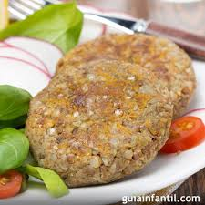
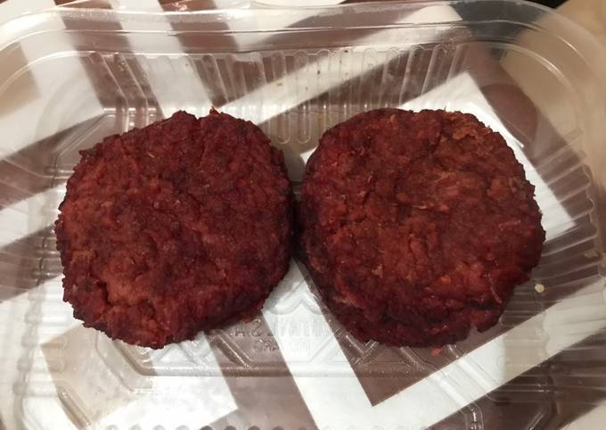
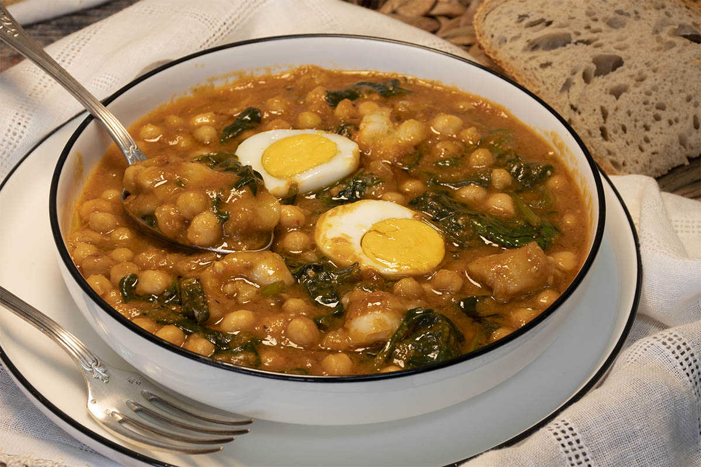
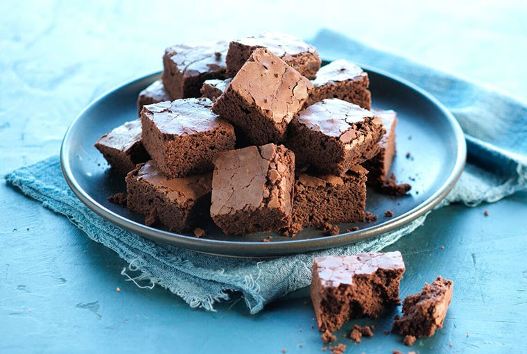

Bienvenidos a Sin Gluten y Delicioso, tu sitio para recetas 100% libres de gluten, fáciles y llenas de sabor. Encuentra opciones creativas y nutritivas para cada comida, pensadas para celíacos y quienes buscan alternativas saludables sin perder el gusto. ¡Descubre lo delicioso que puede ser comer sin gluten!
1. HAMBURGUESAS DE LENTEJAS

Ingredientes:
200 g de lentejas crudas,
200 g de arroz yamaní,
2 cebollas,
2 zanahorias ralladas,
sal y pimienta al gusto.
Preparación:
Cocina las lentejas y el arroz. Sofríe las cebollas y zanahorias, mezcla todo y forma las hamburguesas. Cocina al horno o en sartén.
2. PIZZA DE CALABAZA
Ingredientes:
1 calabaza,
1 huevo,
salsa de tomate al gusto,
1 taza de maicena y
1 taza de harina de sorgo.
Preparación:
Cocina la calabaza, haz puré y mezcla con los demás ingredientes. Hornea durante 20 minutos, añade salsa y queso, y hornea otros 10 minutos.
3. MEDALLONES DE REMOLACHA

Ingredientes:
1 remolacha cocida,
1 taza de porotos colorados y
1/3 taza de harina de garbanzos.
Preparación:
Procesa la remolacha y los porotos, mezcla con la harina y condimentos. Cocina en horno o sartén.
4. ENSALADA DE QUINOA CON CALABAZA ASADA
Ingredientes:
300 g de calabaza,
200 g de quinoa,
1 cebolla morada,
aceite de oliva y limón.
Preparación:
Asa la calabaza y cebolla, cocina la quinoa, mezcla todo en un bol y sazona.
5. MILANESAS DE LENTEJAS
Ingredientes:
2 tazas de lentejas secas,
cebolla, ajo, cilantro y
rebozador de mandioca.
Preparación:
Cocina las lentejas, mezcla con los demás ingredientes, forma las milanesas y cocina en sartén.
6. TORTILLAS DE MAÍZ
Ingredientes:
Harina de maíz (masa harina),
agua y sal.
Preparación:
Mezcla la harina con agua y sal hasta formar una masa. Forma tortillas y cocínalas en una sartén caliente.
7. GUISO DE GARBANZOS

Ingredientes:
300 g de garbanzos cocidos,
cebolla, ajo, zanahoria y especias al gusto.
Preparación:
Sofríe las verduras, añade los garbanzos y cocina a fuego lento con especias.
8. BROWNIES SIN GLUTEN

Ingredientes:
200 g de chocolate negro sin gluten,
100 g de mantequilla o aceite vegetal,
azúcar, huevos y harina de almendra.
Preparación:
Derrite el chocolate con la mantequilla, mezcla con los demás ingredientes y hornea a 180 °C.
9. CREPES SIN GLUTEN
Ingredientes:
Harina de arroz o maíz,
agua o leche vegetal y
sal.
Preparación:
Mezcla los ingredientes hasta obtener una masa líquida, cocina en una sartén antiadherente.
10. SOPA DE VERDURAS
Ingredientes:
Verduras variadas (zanahoria, calabacín, puerro) y
caldo sin gluten.
Preparación:
Cocina las verduras en el caldo hasta que estén tiernas. Puedes triturar para obtener crema si lo prefieres.